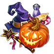
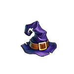
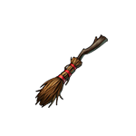
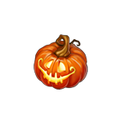
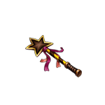
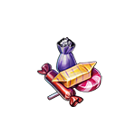

Получено: файл; исходный URL. Иллюстрация в отдельной статье ViveR_9 «Коллекция Хэллоуин»; исходный файл без перекодирования. Авторство отдельно не установлено. Страница: источник.
Коллекция Хэллоуина
Браузерная социальная версия; историческая статья; дата редакции неизвестна- Тип
- Коллекции
- Версия и дата
- Браузерная социальная версия; историческая статья; дата редакции неизвестна
Элементы коллекции





Данные по источнику · Браузерная социальная версия · историческая статья; дата редакции неизвестна
Предварительно: один материал, требуется сверка. Требуется сверка.
- Состав (источник Zombie-island)
- Колпак; Метла; Тыква; Палочка; Конфеты.
- Награда (источник Zombie-island)
- 3 Ба-бах!; 5 Зомбаксы.
- Коллекция Хеллоуин находится в сундуках под зимними ресурсами
- Большая зимняя елка; Большой зимний валун; Снежный пик большой.
- Коллекцию Хэллоуина можно найти на островах
- Дремучий; Лунный; Мобильный остров; Полярной ночи; Маленькой ёлки; Большой ёлки; Огромной ёлки; Остров НЛО.
- Коллекцию Хэллоуина можно выиграть в рулетках
- Флаг Марафонца; Телескоп.
- Коллекцию Хэллоуина можно получить в награду за многие квесты
- Загадочный профессор; Задачи экспедиции; Трудовые будни; Из космоса; Безысходность; Гостья; Запасы.
- Коллекция Хэллоуина участвует в строительстве
- Клетка.
- Коллекция Хэллоуина попадается в ценностях и сокровищах игры Зомби Ферма
- Фантастический сундук; Осенний презент с гранатом; Ящик Дворника; Сундук Чудовища 3; Хэллоуин 2015; Дом привидений; Чудо-ель; Лампа света; Ледяной дворец; Дерево страсти; Цирковой шатер; Хэллоуинский маяк; Новогодняя елка за дубл; Новогодняя елка за зб; Изумрудная башня; Мавзолей; Ледяной дворец за ЗБ; Сад бабочек; Хэллоуин 2014; Осенний презент 1.
- Страница сайта Коллекция Хэллоуина
- Описание:.


Данные по источнику · браузерная версия; платформа в ответе не уточнена · Дата на странице (формат не уточнён): 17/03/2015
Предварительно: Ответ справочного сайта; достоверность и независимость от других фанатских источников не установлены. Возможны различия редакций и версии.. Требуется сверка.
- Ответ источника
- Хэллоуинская коллекция Зомби Ферма состоит из 5 тематических предметов: конфет, колпака, тыквы, волшебной палочки и метлы. После сбора всех составляющих, можно получить 5 зомбобаксов и 3 ба-баха. Помимо выигрыша, собрать коллекцию нужно каждому, кто хочет создать Клетку. В основном все предметы находятся в тех сундуках, которые спрятаны под зимними ресурсами (елками, валунами, пиками). Также Хэллоуинскую коллекцию можно найти на большинстве островов, существующих в игре, выиграть в рулетке «Флаг марафонца», найти в фантастическом сундуке или получить после успешного прохождения некоторых заданий (например, Трудовые будни и Загадочный профессор).
Данные по источнику · браузерная версия; платформа не указана · дата редакции не установлена
Предварительно: Содержимое списка: изображения и колонки могут терять смысл при извлечении текста; отдельная страница и дата не проверены. Подписи alt иногда ошибочны.. Требуется сверка.
- Текст карточки из каталога
- 3 Ба-Баха и 5 зомбаксов Колпак Метла Тыква Палочка Конфеты Попадается в: Дом Страха: 1 Стадия, 3 Стадия, 4 Стадия, 7 Стадия, 1 0 Стадия, Ледяной дворец, Зимние острова: Ели на 50 единиц, глыбы 80 единиц, Большой снежный пик на 50 едениц Фантастическом сундуке и в Флаге Марафонца
Данные по источнику · Мой Мир (Mail.ru); историческая таблица · дата редакции не установлена
Предварительно: Источник сам использует знаки вопроса; не следует считать такие места подтверждёнными. Возможны изменения патча и платформы; независимость от других справочников не доказана.. Требуется сверка.
- Название в источнике
- Коллекция Хеллоуин
- Где копать
- При превращении Дома Страха ( 1 Стадия, 3 Стадия, 4 Стадия, 7 Стадия, 10 Стадия)
- Награда
- 3 Ба-Баха и 5 ЗомбиБаксов
Данные по источнику · браузерная версия; на сайте указана игра ВКонтакте · дата редакции не установлена
Предварительно: Исторический текст; сильно совпадает со справкой Zommbie.at.ua, независимость не доказана. Отрицания и доступность могут измениться с патчем.. Требуется сверка.
- Где искать по странице «Зомбастики»
- Источник утверждает: данную коллекцию невозможно выкопать.
Данные по источнику · историческая социальная версия ВКонтакте; редакция неизвестна · дата последующей редакции неизвестна
Предварительно: Фанатская статья; актуальность, вероятности и независимость от других справочников не установлены.. Требуется сверка.
- Состав
- Колпак, Метла, Тыква, Палочка, Конфеты.
- Обмен
- 3 Ба-бах! и 5 зомбаксов.
- Создание и рулетки
- Отражатель без указанного рецепта; рулетки Чемпиона, Флага Марафонца, Волшебного пруда, Фотодоски, Пугала, Телескопа, Тотемов Огня и Воды.
- Находки
- В статье перечислены задания и ценности, например Хэллоуин 2014–2017, Торт, Сундук Чудовища, Ящик Дворника и Подарок Любви. Вероятности не приведены.
- Применение
- Строительство Клетки и освобождение Бегемота; также назван ряд заданий. Количество не приведено.
Данные по источнику · историческая браузерная версия, платформа не указана · 10.01.2014 — дата в каталоге; дата редакции материала неизвестна
Предварительно: Фанатский список без вероятностей и уточнения площадки; независимость от других источников не установлена.. Требуется сверка.
- Где искать по списку сайта
- Данную коллекцию невозможно выкопать!
- Оговорка
- Список может относиться к разным условиям, инструментам и периодам игры; не доказывает гарантированное выпадение. Заявления «только» и «невозможно» относятся лишь к времени и версии источника.
Данные по источнику · историческая браузерная игра; площадка не уточнена · 26.02.2013 — дата каталога; редакция неизвестна
Предварительно: Проверен текст в каталоге сайта; вероятность выпадения не указана. Исторические версии и даты могут различаться; списки и награды требуют сверки, независимость сайта от других справочников не установлена.. Требуется сверка.
- Награда в источнике
- 3 Ба-Баха и 5 зомбаксов
- Места в источнике
- Дом Страха (1, 3, 4, 7, 10 стадии), Ледяной дворец, зимние острова — ели и глыбы. Даты адреса и каталога различаются.
Связанные сущности
нет проверенных связей — требуется сверка.
Источники
- прочитано: Zombie-island.moy.su; проверка 2026-11-21
- FatalGame: прочитан отдельный ответ; дата на странице 17/03/2015
- ZOMBIA: прочитана карточка в списке
- Ссылка на отдельную страницу; отдельно не проверена
- Zombiemail: строка таблицы коллекций; Мой Мир
- Зомбастики: прочитана соответствующая строка; возможная копия другого справочника
- ViveR_9: прочитанная статья коллекции
- zommbie.at.ua: где искать коллекции
- zombi-ferma.ucoz.net: каталог коллекций